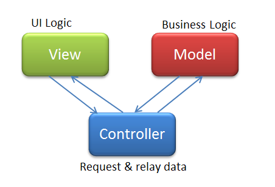

Большинство сегодняшних тем достойны отдельных больших докладов
Цели на сегодня:
- узнать больше о возможностях Yii 2
- научиться организовывать структуру проекта
- рассмотреть ошибки и научиться их избегать
- узнать хорошие решения для типичных задач
- найти для себя что-то новое и полезное
О PHP в целом
PHP развивается
- новый синтаксис (??, <=>, group use)
- новые возможности (anonymous classes, return type declaration)
- крутое ускорение
- рост сообщества
... а проблемы остаются:
- рост количества кода ≠ росту качества кода
- код постоянно меняется
- переусложнение кода
- обратная совместимость
- серебренная пуля так и не найдена
Мы все стремимся
- писать хорошо читабельный и легко поддерживаемый код
- использовать актуальные технологии
- получать удовольствие от работы
Хорошим инструментом приятно работать!
Но нужно уметь.

Yii 2 — MVC фреймворк
|  |
|
Миф об MVC
M в паттерне MVC — модель
Модель в Yii (и не только) — класс, описывающий структуру таблицы
По MVC, бизнес-логика относится к модели
▼
Кладём всю логику в модели, которые описывают структуру таблиц!
На таком MVC далеко не уедешь
- Раздутые модели
- Бизнес-логика размазана
- Копи-паста
- Тестировать сложно
- Трогать опасно
- Жить больно
Разбираемся!
Модели в фреймворке
- Представляют структуры данных:
- таблицы и связи (ActiveRecord)
- формы
- запросы к API
- Содержат сценарии и правила валидации
- Не содержат бизнес-логику
Модель в MVC
- Не один класс! Это целый доменный слой!
- Содержит бизнес-логику
- Содержит модели (таблиц, форм, ...)
Так куда именно писать бизнес-логику?
- В модели (таблиц, форм, ...)
- В контроллеры
- Размазать тонким слоем по всему коду
- В отдельные классы со статическими методами
- В отдельные классы
Отдельные классы для бизнес-логики — это:
- Строгая зона ответственности
- Место для всей грязной логики
- Внедрение зависимостей (DI)
- Интерфейсное взаимодействие
Куда класть и как называть
- Не боимся создавать директории и пространства имён
- Создаём директорию в src модуля/приложения
- Называем классы по сути действия - СущностьДействие
Нужен пример.
Давайте удалим пользователя :)
Класс бизнес-логики ClientDeleter
class ClientDeleter {
protected $accessChecker;
protected $client;
protected $logger;
public function __construct(Client $client,
AccessChecker $accessChecker, Logger $logger) {
// ...
}
public function execute() {
$this->accessChecker->checkPermission('client.delete', $client);
foreach ($client->getActivePurses() as $purse) {
(new PurseBlocker($purse))->execute();
}
$client->delete();
$this->afterDelete($client);
}
protected function afterDelete(Client $client) {
$this->logger->logDeleting($client);
(new ClientMailer($client))->sendBye();
}
}
ClientController
public function actionDelete($id)
{
$client = Client::findById($id);
Yii::createObject(ClientDeleter::class, [$client])->execute();
return $this->render('goodbye', ['model' => $client]);
}
На выходе получим:
- Тонкий контроллер
- Тонкую модель
- Тестируемый в изоляции класс логики
- Готовность к повторному использованию
- Возможность переопределения и дополнения
 |
|
Ещё немного о моделях
- Описываем ENUM-типы — константами (STATE_ENABLED, TYPE_PARTNER)
- Не работаем с $_GET, $_POST, etc
- Не генерируем HTML
- Перечисляем используемые сценарии в константах (SCENARIO_CREATE)
- При необходимости, переопределяем load()
- Не создаём модели, если они мешают (отчёты, статистика)
- Не раздуваем
Переопределяем класс ActiveQuery
class ClientQuery extends \yii\db\ActiveQuery
{
public function active()
{
$this->andWhere(['disabled' => 0]);
}
public function topCountries($limit = 10)
{
$this->select(['country', 'clientsCount' => 'count(*)']
->groupBy(['country'])
->orderBy(['count(*)' => SORT_DESC])
->limit($limit)
->asArray()->all();
}
}
class Client extends \yii\db\ActiveRecord
{
public static function find()
{
return Yii::createObject(ClientQuery::class, [get_called_class()]);
}
}
Описываем хитрые или уточнённые связи прямо в модели
public function getPurses()
{
return $this->hasMany(Purse::class, ['client_id' => 'id']);
}
public function getActivePurses()
{
return $this->getPurses()->active();
}
View
- HTML
- Минимум логики
- Не делает запросов в БД
- Не запрашивает и не изменяет данные
- Получает данные от контролера
- Разделять большие вьюхи на части
- Сложный HTML с логикой оформлять в виджеты
Controllers & Actions
- Обрабатывают действия
- Создают и наполняют модели
- Не генерируют HTML (рендерят вьюхи)
- Не содержат голый SQL
- Не содержат бизнес-логику (вызывают её)
Переиспользуемые экшены
|
|
- Декларативное описание
- Легче тестировать
- Сложность локального изменения поведения
Компоненты
- Регистрация в конфигурации приложения
- Доступ через
Yii::$app->componentName - Один класс – много компонентов
- Никаких синглтонов
- Много встроенных компонентов
- Большой выбор компонентов в Open-Source
- Можно переопределять и дополнять
Встроенные компоненты
- request – представление запроса от клиента
- response – представление ответа
- session – хранилище данных сессии
- urlManager – парсинг и генерация URL
- db – работа с БД
- formatter – форматирование дат, времени, др. величин
- i18n – интернационализация
- log – цели логирования
- и другие ...
Пишите компонент, когда:
- Конфигурация на уровне приложения
- Нужно один раз инициализировать
- Хочется написать синглтон
Helpers
- Класс со статическими методами
- Замена функций и их группировка
- Когда не нужна конфигурация на уровне приложения
- Преобразование данных
- Переопределение наследованием
Встроенные хэлперы:
- StringHelper – манипуляции со строками
- ArrayHelper – манипуляции с массивами
- Html – генерация HTML
- Json – работа с JSON
- и другие...
Виджеты
- Вьюхи с логикой в ООП-стиле
- Борьба копи-пастой во вьюхах
- Хороши для повторно-используемых элементов: кнопки, таблицы, цельные компоненты вёрстки
- Приятно тестировать
Behaviors
public function behaviors()
{
return [
[
'class' => BlameableBehavior::className(),
'createdByAttribute' => 'author_id',
'updatedByAttribute' => 'updater_id',
],
];
}
- По сути — миксины
- Добавление к классу свойств и методов без изменения класса
- Подключение слушателей событий
- Переехали из Yii 1, когда трейтов не было
- Не содержат бизнес-логики
Где пригодится
- Преобразование или дополнение данных в моделях
- Проверка прав доступа перед выполнением действия
- Автоматизация логирования
Преимущества Behavior'ов над Trait'ами
- статическое и динамическое прикрепление
- возможность наследования
- настройка поведения
- возможность тестирования
Недостатки Behavior'ов
- Медленнее, чем Trait'ы
- Не будет подсветки в IDE
Модули
Могут объединять всё: контроллеры, модели, вьюхи, компоненты, виджеты, etc.
- Группировка похожих функций приложения
- Изоляция функций для их последующего использования в других проектах
RBAC
- Хоть и Role Based, проверяем Permission
- Детализация прав доступа по необходимости – YAGNI
- Используем фильтр AccessControl
Миграции
class m160831_create_news extends Migration
{
public function up()
{
$this->createTable('news', [
'id' => $this->primaryKey(),
'title' => $this->string()->notNull(),
'content' => $this->text(),
]);
}
}
- Единственный железный способ поддержания целостности
- Абстрактно от БД и среды
- Легко пишутся
- Тестируемы
Миграции применимы для
- Создания и изменения структуры БД
- Наполнение и конвертации таблицы
- Управления RBAC
i18n — internationalization
- Исходный язык – английский
- Делаем специализированные словари
- Называем их осмысленно
- Используем генерацию словарей из кода
- Не пользуемся машинным переводом
Yii::t() умеет форматировать:
// Числа
echo Yii::t('app', 'Value: {value, number}', ['value' => 123456,789]);
// Value: 123,456.789
// Валюты
echo Yii::t('app', 'Price: {price, number, currency}', ['price' => 100]);
// Price: $100.00
// Числа прописью
echo Yii::t('app', '{n,number} is spelled as {n, spellout}', ['n' => 42]);
// 42 is spelled as forty-two
// Множественные формы
$message = 'Здесь {n, plural, =0{котов нет} =1{есть один кот}
one{# кот} few{# кота} many{# котов} other{# кота}}!';
echo Yii::t('app', $message, ['n' => 42]);
// Здесь есть один кот!
Пишем выражения правильно
Last update: 07/31/2016
Плохо:
Yii::t('app', 'Last') .' '. Yii::t('app', 'update') .': '. date('m/d/Y')
- Склонение
- Падежи
- Последовательность слов
- Формат даты
Хорошо:
echo Yii::t('presentation', 'Last update: {date}', [
'date' => Yii::$app->formatter->asDate($model->date, 'short')
]);
// Последнее обновление: 31.07.2016
Как быть с HTML
echo Yii::t('presentation', 'Powered by {link}', [
'link' => Html::a('//yiiframework.com', Yii::t('yii', 'Yii Framework'))
]);
// Сделано на <a href="//yiiframework.com">фреймворке Yii</a>
Больше про i18n в докладе
Yii and PHP i18n & L10n Александра Макарова
Общие советы
- Согласованный стиль кода
- Сразу пишем PHPDoc
- Пишем тесты
- Читаем и проверяем перед коммитом
- Собираем, разделяем и анализируем логи
- Читаем документацию
- Смотрим исходники
- Профилируем код
- Развиваемся и получаем удовольствие от работы :)